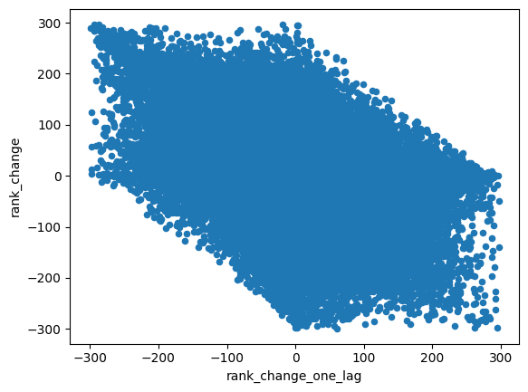

import numpy as np
import pandas as pd
import sklearn33 Option Volume: Introduction
The function of an option market-maker is to provide liquidity on option exchanges. At any given time, they are willing to buy an option for a price slightly lower than fair value, and sell that same option for a price slightly higher than the fair value. The more trades a market-maker executes, the more money they make. They also have limited computing power, and thus it makes sense for them to direct their limited resources to underlyings which have the most volume. For this reason, it is useful for a market-maker to predict option volume rankings for underlyings.
The purpose of this chapter is to try to predict option volume rankings. In particular, we will:
- choose a universe of moderately liquid underlyings, using 2016 volume data
- fit a model for the aforementioned underlyings using data from 2017 (training period)
- use this fitted model to make volume predictions for January 2018 (backtest period)
Additionally, we will define the top-\(n\) metric that we will use to evaluate various prediction models that we will explore in future chapters.
33.1 Importing Packages
Let’s begin by importing the packages that we will need.
33.2 Reading-In Data
Next let’s read-in the data that we will need.
df_stats = pd.read_csv('../data/option_stats.csv')
df_stock = pd.read_csv('../data/option_stock_quote.csv')The data in df_stats consists of volume, open-interest, and implied volatility statistics for all available underlyings.
df_stats| symbol | quotedate | implied_vol | totalvol | totaloi | |
|---|---|---|---|---|---|
| 0 | A | 2016-01-04 | 0.3289 | 1330 | 116961 |
| 1 | AA | 2016-01-04 | 0.4843 | 38615 | 1152498 |
| 2 | AAC | 2016-01-04 | 0.8606 | 3 | 1386 |
| 3 | AAL | 2016-01-04 | 0.4096 | 56386 | 875178 |
| 4 | AAN | 2016-01-04 | 0.4471 | 23 | 5480 |
| ... | ... | ... | ... | ... | ... |
| 2202060 | ZTO | 2018-01-31 | 0.4140 | 53 | 15086 |
| 2202061 | ZTS | 2018-01-31 | 0.2419 | 1333 | 29890 |
| 2202062 | ZUMZ | 2018-01-31 | 0.5936 | 21 | 4121 |
| 2202063 | ZX | 2018-01-31 | 0.0000 | 0 | 21 |
| 2202064 | ZYNE | 2018-01-31 | 0.7505 | 253 | 10646 |
2202065 rows × 5 columns
The data in df_stock consists of end-of-day prices for each of the underlyings.
df_stock| symbol | quotedate | px_close | volume | |
|---|---|---|---|---|
| 0 | A | 2016-01-04 | 40.69000 | 3287300 |
| 1 | AA | 2016-01-04 | 9.70999 | 12639700 |
| 2 | AAC | 2016-01-04 | 18.52000 | 119400 |
| 3 | AAL | 2016-01-04 | 40.91000 | 12037200 |
| 4 | AAN | 2016-01-04 | 22.68000 | 698000 |
| ... | ... | ... | ... | ... |
| 2201883 | ZTO | 2018-01-31 | 15.81000 | 1121202 |
| 2201884 | ZTS | 2018-01-31 | 76.77000 | 3690956 |
| 2201885 | ZUMZ | 2018-01-31 | 20.75000 | 361661 |
| 2201886 | ZX | 2018-01-31 | 1.31000 | 17279 |
| 2201887 | ZYNE | 2018-01-31 | 12.09000 | 263042 |
2201888 rows × 4 columns
33.3 Wrangling: Selecting the Universe
We will use data from 2016 to choose the universe for our analysis. The universe we will ultimately arrive at is the 301-500 most liquid underlyings for which there is data for all of 2017 (training period) and January of 2018 (backtest period).
Let’s begin by isolating the 2016 data from df_stats.
df_stats_2016 = df_stats.query('quotedate >= "2016-01-01"').query('quotedate <= "2016-12-31"')Next, we calculate the daily volume volume ranks for all the symbols in 2016.
df_volume_rank = \
(
df_stats_2016
.groupby(['symbol'])[['totalvol']].mean()
.reset_index()
.rename(columns={'totalvol':'average_daily_volume'})
.assign(average_daily_volume = lambda df: np.round(df['average_daily_volume']))
.assign(volume_rank = lambda df: df['average_daily_volume'].rank(ascending=False))
)
df_volume_rank| symbol | average_daily_volume | volume_rank | |
|---|---|---|---|
| 0 | A | 905.0 | 895.5 |
| 1 | AA | 39852.0 | 55.0 |
| 2 | AAC | 108.0 | 2118.0 |
| 3 | AAL | 37165.0 | 60.0 |
| 4 | AAN | 402.0 | 1308.0 |
| ... | ... | ... | ... |
| 4742 | ZTO | 358.0 | 1381.0 |
| 4743 | ZTS | 1945.0 | 589.5 |
| 4744 | ZUMZ | 206.0 | 1693.0 |
| 4745 | ZX | 0.0 | 4703.5 |
| 4746 | ZYNE | 91.0 | 2235.0 |
4747 rows × 3 columns
Let’s initially create df_raw_universe that has more symbols than we will need because not all symbols have data for all days. In particular, we will first grab the 301-700th most liquid underlyings. In the next steps we will select only symbols that have data for all days.
df_universe_raw = \
(
df_volume_rank
.query('volume_rank >= 301 & volume_rank <= 700')
.sort_values(['volume_rank'])
[['symbol', 'average_daily_volume', 'volume_rank']]
)
df_universe_raw| symbol | average_daily_volume | volume_rank | |
|---|---|---|---|
| 624 | BUD | 5623.0 | 301.0 |
| 2159 | IILG | 5619.0 | 302.0 |
| 4032 | TAP | 5611.0 | 303.0 |
| 325 | ASHR | 5606.0 | 304.0 |
| 3301 | POM | 5565.0 | 305.0 |
| ... | ... | ... | ... |
| 2812 | MTW | 1441.0 | 696.0 |
| 957 | CRC | 1438.0 | 697.0 |
| 3296 | PNRA | 1432.0 | 698.5 |
| 1653 | FNSR | 1432.0 | 698.5 |
| 4433 | VIXY | 1428.0 | 700.0 |
400 rows × 3 columns
Next, let’s grab the data for both the training period (2017) and the backtest period (January 2018).
df_stats_analysis = df_stats.query('quotedate >= "2017-01-01"').query('quotedate <= "2018-01-31"')And finally we are ready to select our universe.
df_universe = \
(
df_universe_raw # start with big universe
.merge(df_stats_analysis, how='left', on='symbol') # join volume and volatility stats
.merge(df_stock, how='left', on=['symbol', 'quotedate']) # join stock price data
.dropna()
.groupby(['symbol', 'volume_rank'])[['quotedate']].count() # count the number of rows of data that exist
.reset_index()
.sort_values(['volume_rank'])
.query('quotedate == 272') # grab the symbols that have all 272 days worth of data - this is hardcoded
.assign(rerank = lambda df: df['volume_rank'].rank()) # rerank this smaller universe
).query('rerank <= 300') # grab the 300 most liquid underlyings in restricted universe
df_universe| symbol | volume_rank | quotedate | rerank | |
|---|---|---|---|---|
| 44 | BUD | 301.0 | 272 | 1.0 |
| 321 | TAP | 303.0 | 272 | 2.0 |
| 25 | ASHR | 304.0 | 272 | 3.0 |
| 19 | AMJ | 306.0 | 272 | 4.0 |
| 69 | COF | 307.0 | 272 | 5.0 |
| ... | ... | ... | ... | ... |
| 9 | AEP | 647.0 | 272 | 296.0 |
| 259 | PII | 648.0 | 272 | 297.0 |
| 27 | AU | 649.0 | 272 | 298.0 |
| 320 | SYY | 650.0 | 272 | 299.0 |
| 266 | PSTG | 651.0 | 272 | 300.0 |
300 rows × 4 columns
33.4 Wrangling: Handling Zero Implied Vols
There are a number of rows in df_stats_analysis that have zero implied vols, which will affect our analysis down the road.
df_stats_analysis.query('implied_vol <= 0')| symbol | quotedate | implied_vol | totalvol | totaloi | |
|---|---|---|---|---|---|
| 1066997 | AAU | 2017-01-03 | 0.0 | 103 | 3217 |
| 1067042 | ACUR | 2017-01-03 | 0.0 | 0 | 647 |
| 1067084 | AFMD | 2017-01-03 | 0.0 | 50 | 1655 |
| 1067140 | ALIM | 2017-01-03 | 0.0 | 0 | 2454 |
| 1067150 | ALQA | 2017-01-03 | 0.0 | 0 | 16 |
| ... | ... | ... | ... | ... | ... |
| 2201849 | VVUS | 2018-01-31 | 0.0 | 0 | 5085 |
| 2201895 | WG | 2018-01-31 | 0.0 | 0 | 1598 |
| 2201967 | XCOOQ | 2018-01-31 | 0.0 | 0 | 10573 |
| 2202017 | XSPA | 2018-01-31 | 0.0 | 3 | 3031 |
| 2202063 | ZX | 2018-01-31 | 0.0 | 0 | 21 |
45968 rows × 5 columns
Let’s take care of these now. We will set these implied vols to the average non-zero implied vol in the data set. There are probably more sophisticated ways to do this that are more accurate, but using this crude approach will not affect the analysis.
non_zero_mean = df_stats_analysis.query('implied_vol > 0')['implied_vol'].mean()
df_stats_analysis.loc[df_stats_analysis.implied_vol == 0, "implied_vol"] = non_zero_mean
df_stats_analysis.query('implied_vol <= 0')| symbol | quotedate | implied_vol | totalvol | totaloi |
|---|
33.5 Feature Construction of Training Set (2017) and Backtest Set (2018)
Let’s define the training set, and create the features that we may want to use.
df_train = \
(
df_universe[['symbol','rerank']]
.rename(columns={'rerank':'volume_rank'})
.merge(df_stats_analysis, how='left', on=['symbol'])
.query('quotedate <= "2017-12-31"')
.assign(iv_one_lag = lambda df: df.groupby(['symbol'])['implied_vol'].shift())
.assign(iv_change_one_lag = lambda df: df.groupby(['symbol'])['implied_vol'].pct_change().shift())
.assign(iv_change_two_lag = lambda df: df.groupby(['symbol'])['implied_vol'].pct_change().shift(2))
.assign(daily_volume_rank = lambda df: df.groupby(['quotedate'])['totalvol'].rank(ascending=False))
.sort_values(['symbol', 'quotedate'])
.merge(df_stock[['symbol', 'quotedate', 'px_close']], how='left', on=['symbol', 'quotedate'])
.assign(daily_return = lambda df: df.groupby(['symbol'])['px_close'].pct_change())
.assign(scaled_return = lambda df: df.daily_return / (df.iv_one_lag / np.sqrt(252)))
.assign(scaled_return_one_lag = lambda df: df['scaled_return'].shift())
.assign(scaled_return_two_lag = lambda df: df['scaled_return'].shift(2))
.assign(rank_one_lag = lambda df: df.groupby(['symbol'])['daily_volume_rank'].shift())
.assign(rank_two_lag = lambda df: df.groupby(['symbol'])['daily_volume_rank'].shift(2))
.assign(rank_change = lambda df: df.groupby(['symbol'])['daily_volume_rank'].diff())
.assign(rank_change_one_lag = lambda df: df.groupby(['symbol'])['rank_change'].shift())
.assign(rank_change_two_lag = lambda df: df.groupby(['symbol'])['rank_change'].shift(2))
.dropna()
)
df_train| symbol | volume_rank | quotedate | implied_vol | totalvol | totaloi | iv_one_lag | iv_change_one_lag | iv_change_two_lag | daily_volume_rank | px_close | daily_return | scaled_return | scaled_return_one_lag | scaled_return_two_lag | rank_one_lag | rank_two_lag | rank_change | rank_change_one_lag | rank_change_two_lag | |
|---|---|---|---|---|---|---|---|---|---|---|---|---|---|---|---|---|---|---|---|---|
| 3 | ACAD | 57.0 | 2017-01-06 | 0.8471 | 4184 | 120009 | 0.7940 | -0.075992 | 0.097165 | 65.5 | 32.64 | 0.030303 | 0.605851 | -0.150381 | 2.233300 | 73.0 | 7.0 | -7.5 | 66.0 | -103.0 |
| 4 | ACAD | 57.0 | 2017-01-09 | 0.7463 | 2541 | 118250 | 0.8471 | 0.066877 | -0.075992 | 97.0 | 32.69 | 0.001532 | 0.028707 | 0.605851 | -0.150381 | 65.5 | 73.0 | 31.5 | -7.5 | 66.0 |
| 5 | ACAD | 57.0 | 2017-01-10 | 0.8257 | 2145 | 119307 | 0.7463 | -0.118994 | 0.066877 | 116.0 | 31.47 | -0.037320 | -0.793838 | 0.028707 | 0.605851 | 97.0 | 65.5 | 19.0 | 31.5 | -7.5 |
| 6 | ACAD | 57.0 | 2017-01-11 | 0.7765 | 3366 | 120644 | 0.8257 | 0.106392 | -0.118994 | 62.0 | 29.87 | -0.050842 | -0.977465 | -0.793838 | 0.028707 | 116.0 | 97.0 | -54.0 | 19.0 | 31.5 |
| 7 | ACAD | 57.0 | 2017-01-12 | 0.7953 | 5229 | 122426 | 0.7765 | -0.059586 | 0.106392 | 32.0 | 31.78 | 0.063944 | 1.307245 | -0.977465 | -0.793838 | 62.0 | 116.0 | -30.0 | -54.0 | 19.0 |
| ... | ... | ... | ... | ... | ... | ... | ... | ... | ... | ... | ... | ... | ... | ... | ... | ... | ... | ... | ... | ... |
| 75295 | ZTS | 249.0 | 2017-12-22 | 0.1581 | 2843 | 89209 | 0.1865 | 0.085565 | 0.216714 | 79.0 | 71.99 | -0.004012 | -0.341508 | -0.546451 | -0.138988 | 29.0 | 19.0 | 50.0 | 10.0 | -200.0 |
| 75296 | ZTS | 249.0 | 2017-12-26 | 0.1485 | 773 | 89968 | 0.1581 | -0.152279 | 0.085565 | 202.0 | 72.34 | 0.004862 | 0.488162 | -0.341508 | -0.546451 | 79.0 | 29.0 | 123.0 | 50.0 | 10.0 |
| 75297 | ZTS | 249.0 | 2017-12-27 | 0.1490 | 780 | 90270 | 0.1485 | -0.060721 | -0.152279 | 192.0 | 72.45 | 0.001521 | 0.162550 | 0.488162 | -0.341508 | 202.0 | 79.0 | -10.0 | 123.0 | 50.0 |
| 75298 | ZTS | 249.0 | 2017-12-28 | 0.1484 | 718 | 90161 | 0.1490 | 0.003367 | -0.060721 | 199.5 | 72.39 | -0.000828 | -0.088232 | 0.162550 | 0.488162 | 192.0 | 202.0 | 7.5 | -10.0 | 123.0 |
| 75299 | ZTS | 249.0 | 2017-12-29 | 0.1491 | 808 | 89855 | 0.1484 | -0.004027 | 0.003367 | 212.0 | 72.04 | -0.004835 | -0.517197 | -0.088232 | 0.162550 | 199.5 | 192.0 | 12.5 | 7.5 | -10.0 |
74400 rows × 20 columns
We will do the same feature construction for the backtest period, but the filtering will have different dates.
df_test = \
(
df_universe[['symbol','rerank']]
.rename(columns={'rerank':'volume_rank'})
.merge(df_stats_analysis, how='left', on=['symbol'])
.query('quotedate > "2017-12-31"')
.assign(iv_one_lag = lambda df: df.groupby(['symbol'])['implied_vol'].shift())
.assign(iv_change_one_lag = lambda df: df.groupby(['symbol'])['implied_vol'].pct_change().shift())
.assign(iv_change_two_lag = lambda df: df.groupby(['symbol'])['implied_vol'].pct_change().shift(2))
.assign(daily_volume_rank = lambda df: df.groupby(['quotedate'])['totalvol'].rank(ascending=False))
.sort_values(['symbol', 'quotedate'])
.merge(df_stock[['symbol', 'quotedate', 'px_close']], how='left', on=['symbol', 'quotedate'])
.assign(daily_return = lambda df: df.groupby(['symbol'])['px_close'].pct_change())
.assign(scaled_return = lambda df: df.daily_return / (df.iv_one_lag / np.sqrt(252)))
.assign(scaled_return_one_lag = lambda df: df['scaled_return'].shift())
.assign(scaled_return_two_lag = lambda df: df['scaled_return'].shift(2))
.assign(rank_one_lag = lambda df: df.groupby(['symbol'])['daily_volume_rank'].shift())
.assign(rank_two_lag = lambda df: df.groupby(['symbol'])['daily_volume_rank'].shift(2))
.assign(rank_change = lambda df: df.groupby(['symbol'])['daily_volume_rank'].diff())
.assign(rank_change_one_lag = lambda df: df.groupby(['symbol'])['rank_change'].shift())
.assign(rank_change_two_lag = lambda df: df.groupby(['symbol'])['rank_change'].shift(2))
.dropna()
)
df_test| symbol | volume_rank | quotedate | implied_vol | totalvol | totaloi | iv_one_lag | iv_change_one_lag | iv_change_two_lag | daily_volume_rank | px_close | daily_return | scaled_return | scaled_return_one_lag | scaled_return_two_lag | rank_one_lag | rank_two_lag | rank_change | rank_change_one_lag | rank_change_two_lag | |
|---|---|---|---|---|---|---|---|---|---|---|---|---|---|---|---|---|---|---|---|---|
| 3 | ACAD | 57.0 | 2018-01-05 | 0.5870 | 650 | 59158 | 0.5443 | 0.073147 | 0.047717 | 255.0 | 28.90 | 0.004170 | 0.121605 | -0.774238 | -1.022725 | 60.0 | 142.0 | 195.0 | -82.0 | 121.0 |
| 4 | ACAD | 57.0 | 2018-01-08 | 0.6228 | 15210 | 58518 | 0.5870 | 0.078449 | 0.073147 | 7.0 | 27.11 | -0.061938 | -1.675010 | 0.121605 | -0.774238 | 255.0 | 60.0 | -248.0 | 195.0 | -82.0 |
| 5 | ACAD | 57.0 | 2018-01-09 | 0.6016 | 2152 | 68583 | 0.6228 | 0.060988 | 0.078449 | 153.0 | 28.29 | 0.043526 | 1.109441 | -1.675010 | 0.121605 | 7.0 | 255.0 | 146.0 | -248.0 | 195.0 |
| 6 | ACAD | 57.0 | 2018-01-10 | 0.5761 | 798 | 65129 | 0.6016 | -0.034040 | 0.060988 | 237.0 | 28.63 | 0.012018 | 0.317131 | 1.109441 | -1.675010 | 153.0 | 7.0 | 84.0 | 146.0 | -248.0 |
| 7 | ACAD | 57.0 | 2018-01-11 | 0.5355 | 1081 | 65813 | 0.5761 | -0.042387 | -0.034040 | 236.0 | 27.90 | -0.025498 | -0.702593 | 0.317131 | 1.109441 | 237.0 | 153.0 | -1.0 | 84.0 | 146.0 |
| ... | ... | ... | ... | ... | ... | ... | ... | ... | ... | ... | ... | ... | ... | ... | ... | ... | ... | ... | ... | ... |
| 6295 | ZTS | 249.0 | 2018-01-25 | 0.2039 | 1662 | 24055 | 0.2025 | 0.006962 | 0.021331 | 177.0 | 79.25 | 0.011745 | 0.920736 | 0.752860 | 0.114461 | 203.0 | 227.0 | -26.0 | -24.0 | -5.5 |
| 6296 | ZTS | 249.0 | 2018-01-26 | 0.2046 | 4137 | 25213 | 0.2039 | 0.006914 | 0.006962 | 85.0 | 80.09 | 0.010599 | 0.825207 | 0.920736 | 0.752860 | 177.0 | 203.0 | -92.0 | -26.0 | -24.0 |
| 6297 | ZTS | 249.0 | 2018-01-29 | 0.2426 | 3662 | 26275 | 0.2046 | 0.003433 | 0.006914 | 96.0 | 79.18 | -0.011362 | -0.881572 | 0.825207 | 0.920736 | 85.0 | 177.0 | 11.0 | -92.0 | -26.0 |
| 6298 | ZTS | 249.0 | 2018-01-30 | 0.2604 | 365 | 29722 | 0.2426 | 0.185728 | 0.003433 | 276.0 | 78.35 | -0.010482 | -0.685918 | -0.881572 | 0.825207 | 96.0 | 85.0 | 180.0 | 11.0 | -92.0 |
| 6299 | ZTS | 249.0 | 2018-01-31 | 0.2419 | 1333 | 29890 | 0.2604 | 0.073372 | 0.185728 | 184.0 | 76.77 | -0.020166 | -1.229355 | -0.685918 | -0.881572 | 276.0 | 96.0 | -92.0 | 180.0 | 11.0 |
5400 rows × 20 columns
Let’s export both the training data and backtest data to CSVs for future use.
df_train.to_csv('../data/option_train_2017.csv', index=False)
df_test.to_csv('../data/option_test_2018.csv', index=False)33.6 Exploratory Data Analysis of Training Data
Let’s perform some exploratory data analysis on our training data.
Our first observation is that there is a high correlation between an underlying’s previous day rank and its current rank, which makes intuitive sense.
df_train[['rank_one_lag', 'daily_volume_rank']].corr()| rank_one_lag | daily_volume_rank | |
|---|---|---|
| rank_one_lag | 1.000000 | 0.559952 |
| daily_volume_rank | 0.559952 | 1.000000 |
Next, we can see that there is a fair amount of mean reversion in ranks, which means if the rank increased yesterday, it is likely to decrease today, and vice versa.
df_train.plot(kind='scatter', x='rank_change_one_lag', y='rank_change');
df_train[['rank_change_one_lag', 'rank_change']].corr()| rank_change_one_lag | rank_change | |
|---|---|---|
| rank_change_one_lag | 1.000000 | -0.434256 |
| rank_change | -0.434256 | 1.000000 |
Since the correlation is stronger for rank than it is for rank-change, so we will perform predictive modeling on rank.
33.7 Top-\(n\) Ratio
Ultimately, we don’t care if we get the volume rank predictions exactly right. For example, if we correctly guess the top 10 underlyings, we don’t care if we get the ordering right.
For this reason, let’s consider the top-\(n\) ratio metric, which compares the ratio of our predicted top-\(n\) ranked volume, and the actual top-\(n\) ranked volume. Note that this ratio is always less that or equal to 1.
We’ll begin by creating a function that calculates the top-\(n\) volume for all the days in our backtest period.
def top_n_volume(n):
df_test = pd.read_csv("../data/option_test_2018.csv")
df_top_n_volume = \
(
df_test
.query('daily_volume_rank <= @n')
.groupby(['quotedate'])[['totalvol']].sum()
.reset_index()
.rename(columns={'totalvol':'top_' + str(n) + '_volume'})
)
return(df_top_n_volume)Let’s examine the output of this function.
top_n_volume(25)| quotedate | top_25_volume | |
|---|---|---|
| 0 | 2018-01-05 | 659260 |
| 1 | 2018-01-08 | 516046 |
| 2 | 2018-01-09 | 543219 |
| 3 | 2018-01-10 | 598589 |
| 4 | 2018-01-11 | 559668 |
| 5 | 2018-01-12 | 634138 |
| 6 | 2018-01-16 | 484750 |
| 7 | 2018-01-17 | 711695 |
| 8 | 2018-01-18 | 510736 |
| 9 | 2018-01-19 | 735554 |
| 10 | 2018-01-22 | 508607 |
| 11 | 2018-01-23 | 580468 |
| 12 | 2018-01-24 | 601835 |
| 13 | 2018-01-25 | 524369 |
| 14 | 2018-01-26 | 547504 |
| 15 | 2018-01-29 | 511379 |
| 16 | 2018-01-30 | 493253 |
| 17 | 2018-01-31 | 499669 |
33.8 A Simple Rule-Based Predictor
Recall that there is a high degree of correlation between yesterday’s volume rank and today’s volume rank. This observation leads to the following rules based predictor: tomorrow’s volume rank is equal to today’s. In a later section we will compare the performance of this simple rule-based predictor with linear regression on two features.
33.9 User Defined Functions
In order to evaluate predictors with top-\(n\) ratio we will need the following two function functions.
The calc_top_n_ratio() function calculates the top-\(n\) ratio for a given fitted model, for a given trade_date.
def calc_top_n_ratio(n, trade_date, df_test, model=None, features=[]):
# grabbing top-n volume for each day in backtest
df_top_n = top_n_volume(n)
# grabbing feature observations for trade_date
df_prediction = df_test.query('quotedate == @trade_date').copy()
# selecting features from df_X
df_X = df_prediction[features]
# calculating model predictions
if model is not None:
df_prediction['prediction'] = model.predict(df_X) # predictions base on model
else:
df_prediction['prediction'] = df_prediction['rank_one_lag'] # simple-rule based
# sorting by predicted rank
df_prediction = df_prediction.sort_values(['prediction'])
# calculating predicted top-n volume
predicted_top_n_volume = df_prediction.head(n)['totalvol'].sum()
# querying for actual top-n volume
actual_top_n_volume = df_top_n.query('quotedate == @trade_date')['top_' + str(n) + '_volume'].values[0]
# return the top-n-ratio
return(predicted_top_n_volume / actual_top_n_volume)The backtest() function takes a fitted model and loops through all the trade_dates in the backtest period and uses the calc_top_n_ratio() function to calculate the all the top-\(n\) ratios.
def backtest(n, df_test, model=None, features=[]):
# all trade dates in backtest period
trade_dates = df_test['quotedate'].unique().tolist()
# calculating all top-n ratios
top_n_ratios = []
for ix_trade_date in trade_dates:
top_n_ratios.append(calc_top_n_ratio(n, ix_trade_date, df_test, model, features))
# creating a dataframe of daily top-n ratios
df_daily = pd.DataFrame({
'trade_date':trade_dates,
'top_'+str(n)+'_volume': np.round(top_n_ratios, 3),
})
# calculating summary statsics of top-n ratios during backtest period
df_stats = pd.DataFrame({
'model':[str(model)],
'average':[np.mean(top_n_ratios).round(3)],
'std_dev':[np.std(top_n_ratios).round(3)],
'minimum':[np.min(top_n_ratios).round(3)],
'maximum':[np.max(top_n_ratios).round(3)],
})
return([df_daily, df_stats])33.10 Calculating Performance of Simple Rule-Based Predictor
We can now use the functions defined above to calculate the performance of the simple rule-based predictor.
As we can see, a simple rule-based scheme of simply guessing that volume rank remains unchanged has an average top-25 ratio of 59%.
backtest(25, df_test)[ trade_date top_25_volume
0 2018-01-05 0.768
1 2018-01-08 0.556
2 2018-01-09 0.624
3 2018-01-10 0.467
4 2018-01-11 0.678
5 2018-01-12 0.504
6 2018-01-16 0.591
7 2018-01-17 0.516
8 2018-01-18 0.419
9 2018-01-19 0.610
10 2018-01-22 0.675
11 2018-01-23 0.562
12 2018-01-24 0.550
13 2018-01-25 0.563
14 2018-01-26 0.722
15 2018-01-29 0.592
16 2018-01-30 0.525
17 2018-01-31 0.753,
model average std_dev minimum maximum
0 None 0.593 0.094 0.419 0.768]33.11 Simple Linear Regression
Let’s fit a linear regression with rank_one_lag and rank_two_lag and then see if this model does better.
features = ['rank_one_lag', 'rank_two_lag']
from sklearn.linear_model import LinearRegression
df_features = df_train[features]
df_label = df_train[['daily_volume_rank']]
linear_regression = LinearRegression()
linear_regression.fit(df_features, np.ravel(df_label.values))
linear_regression.score(df_features, df_label)0.3652412348607029backtest(25, df_test, linear_regression, features)[ trade_date top_25_volume
0 2018-01-05 0.816
1 2018-01-08 0.634
2 2018-01-09 0.651
3 2018-01-10 0.531
4 2018-01-11 0.734
5 2018-01-12 0.500
6 2018-01-16 0.620
7 2018-01-17 0.461
8 2018-01-18 0.478
9 2018-01-19 0.610
10 2018-01-22 0.696
11 2018-01-23 0.580
12 2018-01-24 0.584
13 2018-01-25 0.620
14 2018-01-26 0.709
15 2018-01-29 0.605
16 2018-01-30 0.736
17 2018-01-31 0.667,
model average std_dev minimum maximum
0 LinearRegression() 0.624 0.092 0.461 0.816]Clearly the improvement is only modest. The average top-25 ratio of the linear regression is 3-points higher. Additionally, the standard deviation is slightly lower, and the min and max are both closer to 100%.